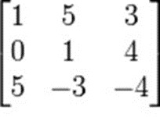

การเปรียบเทียบการประมวลผลของการรันโค้ด
ความรู้เกี่ยวกับเมทริกซ์ (matrix)
ความหมายของเมทริกซ์ (Matrix) คือตารางสี่เหลี่ยมที่แต่ละช่องบรรจุจำนวนหรือโครงสร้างทางคณิตศาสตร์ที่สามารถนำมาบวกและคูณกับตัวเลขได้
เราสามารถใช้เมทริกซ์แทนระบบสมการเชิงเส้น การแปลงเชิงเส้น และใช้เก็บข้อมูลที่ขึ้นกับตัวแปรต้นสองตัวเราสามารถบวกคูณและแยก
เมทริกซ์ออกเป็นผลคูณของเมทริกซ์ได้หลายรูปแบบ
ลักษณะของเมทริกซ์ (Matrix) คือ การเรียงกันเป็นรูปสี่เหลี่ยมผืนผ้าหรือจัตุรัส กล่าวคือเรียงเป็นแถวในแนวนอน
และเรียงเป็นแถวในแนวตั้ง เรามักเขียนเมทริกซ์เป็นตารางที่ไม่มีเส้นแบ่งและเขียนวงเล็บคร่อมตารางไว้(ทั้งวงเล็บแบบโค้งและวงเล็บแบบเหลี่ยม)
แถวในแนวนอนของเมทริกซ์ เรียกว่า “แถว”แถวในแนวตั้งของเมทริกซ์ เรียกว่า “หลัก” จำนวนแต่ละจำนวนในเมทริกซ์ เรียกว่า “สมาชิก”
ซึ่งหากเราจะพูดถึงสมาชิกในเมทริกซ์ ก็จะต้องระบุตำแหน่งให้ถูกต้องด้วย เช่น จากรูปด้านล่าง “สมาชิกที่อยู่ในแถวที่ 2 หลักที่ 3 คือเลข 4”
โจทย์ที่ใช้ในการเปรียบเทียบ
การบวกของเมทริกซ์เรากำหนดให้
Matrix A = [1 2 3]
[4 5 6]
[7 8 9]
Matrix B = [9 8 7]
[6 5 4]
[3 2 1]
เมื่อทำการบวกเมทริกซ์ที่กำหนดให้แล้วจะได้ผลลัพธ์เท่ากับ
Matrix C = [10 10 10]
(A+B) [10 10 10]
[10 10 10]
[10 10 10]
เมื่อทำการทรานสโพสเมทริกซ์ที่กำหนดให้แล้วจะได้ผลลัพธ์เท่ากับ
T
Matrix A = [1 4 7]
[2 5 8]
[3 6 9]
เมื่อทำการอินเวอรส์เมทริกซ์ที่กำหนดให้แล้วจะได้ผลลัพธ์เท่ากับ
-1
Matrix A = [ 4 -1 ]
[-7 2 ]

ตัวอย่างเมทริกซ์ 3x3